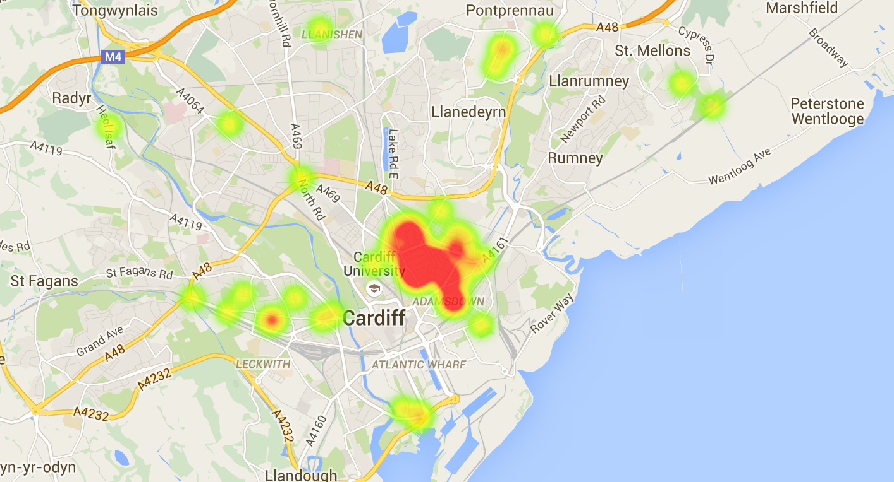

Help clean up city's "stinking" streets by joining The Cardiffian Map Your Trash Campaign
THE Cardiffian is calling on you to Map Your Trash to raise awareness of the “endemic” problem of littering on the city’s streets.
A group of cross-party councillors and voluntary environmental action groups have this week come together to highlight the blight of litter on the streets of Cardiff.
The problem has become so bad that the council’s cabinet member for environment, Cllr Huw Jones, has told this paper that the city risks seeing a spiral of rising crime and plummeting visitor numbers.
Today, The Cardiffian is launching a campaign which will allow you, our readers, to play a part in cleaning up Cardiff’s streets by quickly revealing where and when you see instances of littering and fly-tipping.
This information will then be visible to everyone, including residents, councillors, assembly members and MPs, and The Cardiffian will ensure the council is aware of problematic areas of littering and will report on whether it is taking action.
Heat map of littering in Cardiff
Data from Fix My Street, generated with Google Fusion
“I have lived in this city all my life and I have never known it so bad,” Cllr Jones told The Cardiffian today. “Not a day goes by when I am not forced to wade through piles of stinking rubbish on our streets.
“It is endemic and I am sick of it. People think it’s the council’s fault for not employing enough street cleaners, but they need to realise the council is enduring brutal cuts from central government and is unable to increase staffing costs at this time.
“All I am asking is for people to take a bit of responsibility. At the end of the day, it is you who will suffer when crime rates go up because people lose all respect for where they live, and visitors stop coming to the city and spending their money here.”
But environmentalists have labelled Cllr Jones’ comments “incredibly hypocritical,” pointing out that it was him who oversaw a reduction in general waste collection days and litter bins on the streets.
Jasmine Feldman, of Keep Cardiff Clean, said: “Where does Cllr Jones expect people to put their rubbish? It is incredibly hypocritical to blame residents when it was Cllr Jones who implemented such disastrous policies for our city.
“Regardless of our differences, I am willing to put them to one side and join forces with him and anyone else who is genuinely interested in resolving this crisis.
“I would encourage everyone to get involved with The Cardiffian’s Map Your Trash campaign. It is a great way for you to feel empowered and demand action from your representatives.”
Ms Feldman added: “The best thing about it is how easy it is to use.”
To tell us about littering problems and help put a stop to it, please take the following simple steps:
- First, if you haven’t already, download the Twitter app on your smartphone or tablet and sign up for a free account.
- Finally, tweet a photo of the litter with the hashtag ‘#htl16_litter’ and be sure to attach a precise location to the tweet.
- Once you’ve tweeted, visit Map Your Trash to view the litter you found on an interactive map of all litter readers have seen across Cardiff.
- It is vital that you attach the hashtag and precise location to the tweet for us to be able to map it. If you are unable to include your location in the tweet, please go to your device’s privacy settings and allow Twitter to use your location.
If there are any questions, please e-mail: caleb@thecardiffian.couk; or call: 07586309481.